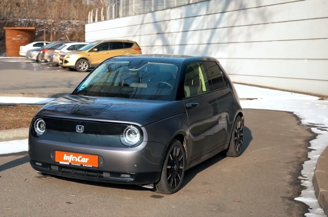
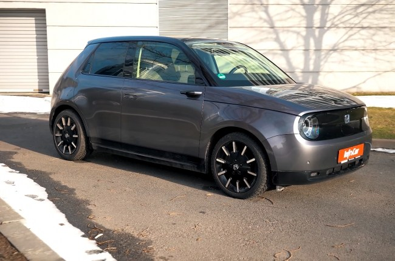
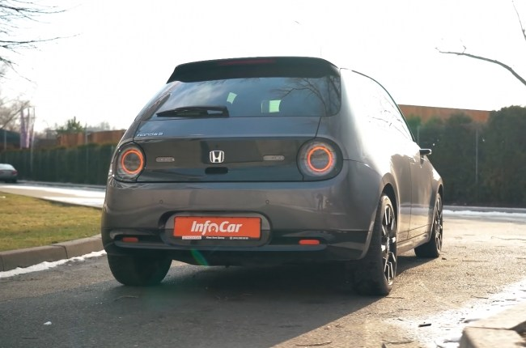
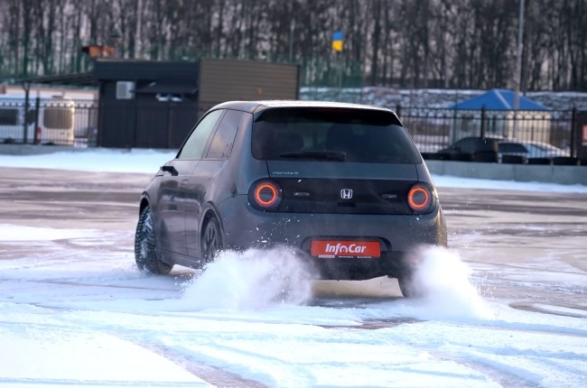
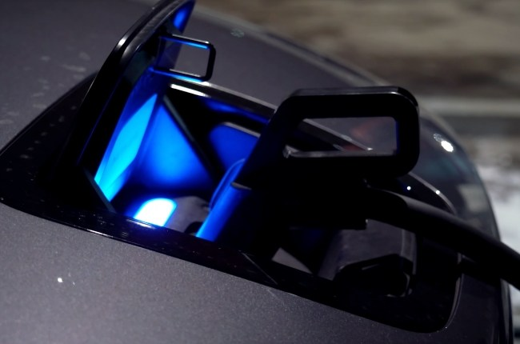
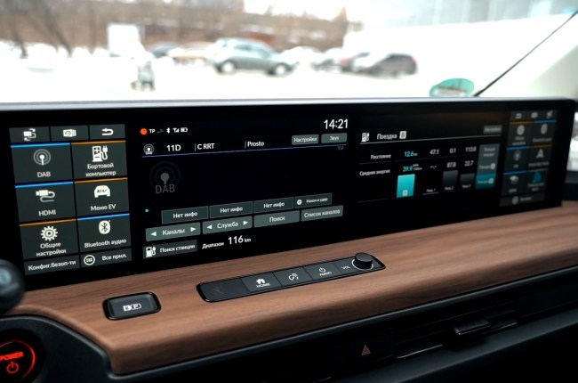
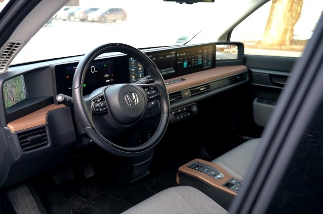
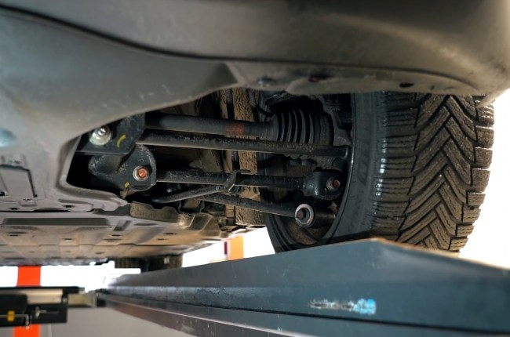

«Как ты туда влез?.. Да она по размерам, что твой ботинок!.. Смотри не выгни дверь изнутри!..» – такие комментарии в соцсетях я получил, сделав пост о будущем тест-драйве Honda e. И сарказм в этих словах весьма понятен: Honda e – городской кроха, а мой рост – 2 метра. Тем не менее всю тестовую неделю за рулем этого электромобиля мне было удобнее, чем в «общепринятой» Toyota Camry. Да и по динамике хэтчбек Honda у Toyota также выигрывает. Проблема этого чудесного японского электромобиля совсем в другом. В чем же именно, мы сейчас и разберемся.
Внешность
Тестовый Honda e – это первый такой автомобиль, появившийся в Украине. Понятное дело, неофициально: владелец привез его себе прямиком из салона дилерского центра в Германии. Никаких повреждений у этого электромобиля не было, да и пробег минимальный. Так что вполне справедливо рассматривать эту Хонду в качестве нового автомобиля.
Нечасто подобное чудо можно встретить на наших дорогах. И под словом «чудо» я подразумеваю два противоположных мнения: одни говорят, что Honda e является городским совершенством, другие – городским сумасшествием. Впрочем, в наших широтах самым вожделенным автомобилем всех времен был KIA Sportage предыдущего поколения, поэтому осуждать тонкий вкус ценителей автомобильной внешности я не решусь.
Скажу только, что дизайн Honda e в 2020 году завоевал Red Dot Design Award. И этого достаточно, чтоб считать данный хэтчбек уж как минимум привлекательным автомобилем. (Даже если вы внезапно ослепли.) Вам недостаточно? Пускай. Тогда чем будете крыть, если скажу, что именно Honda e впервые (!) среди японских автомобилей получила звание автомобиля года в Германии (2021)? А о том, что этот же хэтч забрал награду Всемирного автомобиля года, я скромно умолчу. Но только потому, что Honda e получила ее «лишь» в рамках класса компактных городских авто.
Впервые я увидел этот хэтчбек на автосалоне в Токио в 2017 году. Тогда, правда, это был только концепт – Honda Urban. Как по мне, выглядел он лучше, но в первую очередь из-за наличия трех дверей. Сейчас же их пять, но при рассмотрении хэтча в профиль становится понятно, что задние – это формальность, призванная сделать электромобиль чуть более практичным. Но изначально Honda e была задумана именно как трехдверка. Крохотная: длиною 3.9 м, высотою 1.5 м и шириною 1.75 м.
Драйв
В природе существует две версии Honda e: базовая и Advance. Разница состоит в отдаче синхронного электромотора: 136 л.с. против 154 л.с. при равном крутящем моменте в 315 Нм. Точно так же равны и емкости батарей этих версий.
А теперь, пожалуй, самый важный технический аспект этого электромобиля. Мотор, вопреки ожиданиям большинства, находится сзади, приводя в движение именно задние колеса. Из-за чего этого мелкого городского сорванца действительно очень приятно провоцировать как на контролируемый занос, так и на попросту быстрое прохождение поворотов. Причем в последних хэтчбек очень понятен.

В повороты Honda e заныривает под открытым газом настолько лихо, что порою в это попросту сложно поверить.
Подвеска держится до последнего, и тут я не совру, сказав, что подобное поведение, пожалуй, нельзя встретить
нигде в этом классе. Японцы не поскупились разработать платформу конкретно под этот автомобиль. Разработать
независимую подвеску под этот автомобиль. И найти баланс.
В итоге даже на брусчатке в Honda e комфортнее, чем на любом кроссовере сегмента B-SUV: c точки зрения
кинематики задняя подвеска настроена попросту идеально. Кстати, в некоторых обзорах я находил информацию,
что сзади здесь установлена балка «Де Дион». Что не соответствует истине: подвеска здесь независимая и уникальна
для модели. Вибраций минимум. Неподрессоренных масс совсем не слышно.
То, что база у автомобиля короткая, чувствуется, но очень слабо. Руль у Honda e располагает «длинной» рейкой:
здесь больше трех оборотов от упора до упора. И поначалу можно подумать, что с такой-то рейкой ни о какой азартной
управляемости не может быть и речи. Но ведь база-то короткая. И в городские повороты почти всегда вы входите без
перехватывания руля. Не говоря уж о том, что разворачиваться можно на пятачке: диаметр разворота Honda e – 9.2 м.
Наконец, на хэтчбеке установлены разноширокие колеса! Сзади – 225/45 R17, тогда как спереди – 205/45. Конечно, можно считать,
что такое решение применено с целью сделать автомобиль более экономичным. С другой стороны, японцы – в отличие от некоторых
немцев – все же подумали о площади пятна контакта на нагруженных колесах. Что при 315 Нм крутящего момента совсем немаловажно.
Здесь впору было бы предоставить показатели наших замеров динамики разгона до 100 км/ч. Но, к сожалению, объективных данных у нас нет: зимний (читай – слякотный) Киев не предоставил такой возможности. Впрочем, есть показатели, предоставленные Honda – 8.2 c. И этому результату я склонен верить: как по своим ощущениям от разгона, так и по тому, что они, будем честны, ну совсем уж непретенциозные. Но даже в этом контексте я утверждаю, что динамики Honda e достаточно для того, чтобы объезжать поток. Как всегда с электромобилями, дело в постоянной доступности пиковых показателей момента: наступил – получил.
Батарея и запас хода
В случае с «обычными» автомобилями принято говорить, что их сердцем является двигатель. В случае же с электромобилями речь должна идти не об электромоторе, а о батарее. И если говорить о Honda e, мы с вами стали свидетелями преступления: кажется, было совершенно бесчеловечно устанавливать сюда настолько слабый тяговый аккумулятор.
Технические характеристики тестового хэтчбека предоставляют нам 35.5 кВт*ч в качестве показателя емкости батареи. Но вот реальная емкость, доступная к использованию – это 28.5 кВт*ч. Что выливается в 170 км реального пробега летом и 120 км зимой (то есть с использованием «климата»). Последний показатель, к слову, мы и проверили на себе во время тест-драйва. Да, особенно мы не «жгли», но и не жалели предоставленный нам хэтч. Справедливости ради, если все же не использовать климатическую установку, получится добавить к пробегу еще около его четверти (150 км зимою).
Единственный очевидный плюс столь небольшой емкости батареи – это относительно быстрая ее зарядка «до полной». Разъем ССS позволяет вам заряжаться постоянным током мощностью до 56 кВт. Но на этом преимущества, казалось бы, заканчиваются: заряжаться все равно нужно часто. С другой стороны, не все здесь так очевидно, и об этом мы обязательно поговорим в выводах.
Мультимедия
Что японцы умеют делать однозначно хорошо? У многих первым ответом станет «электроника». Плееры Sony Walkman, виниловые проигрыватели Technics, музыкальные инструменты Yamaha, калькуляторы Casio, часы Seiko… – полностью согласен. Как и со вторым (уверен, очень распространенным) ответом – «автомобили». Лучшая электроника и самые надежные автомобили. Но, кажется, чуть ли не в первый раз японцам удалось свои достижения в этих сферах объединить.
В салоне Honda e перед водителем находятся пять (на самом деле шесть, но не важно!) дисплеев – будущее уже наступило! Слева и справа расположены экраны, выполняющие функцию зеркал. По мне, это не лучшее решение, но реализовано оно здесь более удобно, чем в Audi e-tron (там такие дисплеи расположены под дурацким углом на дверях). К правому претензий у меня не было никаких, а вот левое вызывало вопросы из-за большой слепой зоны. Но стоило провести небольшое исследование настроек (правда, довольно неочевидных), как нашелся выход: переключатель камеры левого зеркала на более широкий угол.

Остальные три дисплея расположены в едином горизонтальном блоке. Слева – напротив водителя – находится кластер,
выполняющий роль приборной панели. На нем останавливаться смысла нет: о точно таком же мы разговаривали в тесте Honda Jazz.
Следом за кластером расположены два сенсорных дисплея. На них можно вывести как собственно «хондовские» окна, так и Apple
CarPlay (без проводов) и Android Auto (по проводам). Кроме того, вывести на них можно также «картинку» с внешних носителей –
через HDMI (к примеру, с приставки).
Если оставить за скобками тот факт, что реализация меню и подменю пока что выглядит грубо и сыро
(потому что управлять всем здесь довольно сложно и запутанно), свою задачу такой подход к мультимедиа выполняет.
А задача эта – показать, что бренд Honda все еще живой и инновационный.
Салон
А вот интерьер Хонды Е – это продукт завершенный и качественный. Касается это как дизайна, так и подбора и подгонки материалов. Горизонтальная полка передней панели – в очень приятном на ощупь дереве. Такое же дерево использовано для оформления островка с кнопками, отвечающими за ездовые режимы. На дверных картах – строчка, вторящая тону дерева (это же касается и ремней безопасности в коричневом цвете). Сами же карты обиты приятной на ощупь тканью, напоминающей твид. Подлокотники выполнены уже в иной ткани – той же, что использована для обивки кресел. «Теплоте» салона вторит и аналоговая климатическая установка.

Из-за того, что пребывать в салоне хэтча максимально приятно, говорить о жестком пластике нет никакого желания.
Да, пускай такой здесь есть, но он явно не из дешевых. Да и подогнаны пластиковые панели друг к другу крепко.
Места в салоне мне, несмотря на рост 2 метра, достаточно для того, чтобы найти близкое к идеальному положение.
Запаса немного не хватает разве что «по рулю», но я уверен, что людям с более «конвенциональным»
ростом удастся устроиться идеально. И даже место на втором ряду за ними останется (за мной же, понятное дело, остается ну
уж совсем мало). К слову, тут сразу нужно отметить, что салон Honda e рассчитан на четверых, а не на пятерых пассажиров.
От багажника рекордных показателей ожидать было бы глупо: сам автомобиль для этого слишком маленький. Спинка второго ряда не разделяется. Под полом находится неглубокий пластиковый органайзер со знаком и ремкомплектом. В оправдание же отсека можно сказать только, что он полностью – и довольно качественно – обшит мягким материалом.
Стоимость и конкуренты
Водить Хонду Е в городе – сплошное удовольствие. Вплоть до 70–80 км/ч разгонная динамика у автомобиля отличная. Да, за пределами этой скорости ощущения становятся менее яркими, но и этого достаточно. К слову, и останавливается автомобиль отлично. Сзади здесь не барабанные механизмы, подобно какому-нибудь Audi Q4 e-tron, а нормальные, пускай и небольшие, диски.

Спустя несколько дней теста я почти что привык к зеркалам-камерам. Да, справедливости ради, кручу
головой чаще обычного, но все же. Хорошо, что салонное зеркало – обычное. Хотя правильнее будет сказать,
что его «можно сделать» обычным: после одного нажатия «картинка» с камеры заднего вида сменяется обычным отображением.
Зеркало и является тем самым шестым дисплеем, о котором я говорил выше. Использовать эту функцию удобно в том случае,
если багажник завален габаритными вещами, препятствующими «нормальному» обзору.
В остальное же время изображение в зеркале вместо отображения – это неудобно и даже небезопасно: глазу
попросту сложно перефокусироваться с дороги на предмет, расположенный за 40 см от вас. Но вау-фактор, конечно же,
присутствует, это правда.
В частности из-за таких вау-факторов, которых в Honda e множество, стоимость автомобиля далека от сопоставимых по размеру и характеристикам городских хэтчей. Судите сами: сейчас (на момент написания теста – InfoCar.ua) в Украине продается ровно один такой автомобиль с пробегом 6 тыс. км. Оценен он в 32 тыс. долларов. И если смотреть поверхностно, то 32 тыс. нужно отдать за очень скромную 28-киловаттную батарею, за очень скромную 8-секундную динамику и за очень скромный четырехместный салон. Собственно, за хэтчбек B-класса.
И спорить с этой позицией сложно. Каким бы привлекательным хэтчбек не был внешне и насколько много бы эмоций от вождения он не дарил, за 32 тыс. в Украине можно приобрести электромобили Nissan Leaf либо Hyundai Kona Electric с вдвое большим запасом хода. При этом Kona – это же еще и всеми любимый форм-фактор кроссовера! А в Honda e всего 12 см клиренса (которые, впрочем, ни разу не стали для меня каким-то препятствием, ну да ладно).
За очень близкие деньги можно также присмотреться к BMW i3 или Volkswagen ID.3. Но вот в чем беда: в последнем, к примеру, салон настолько несопоставим с салоном Honda, что я даже комментировать такое сравнение не буду. А если же обобщать, то ни одна из перечисленных мною альтернатив не может конкурировать с Honda по управляемости и балансу. Nissan Leaf, Hyundai Kona Electric, BMW i3 – это много в чем хорошие автомобили. Но вот Honda попросту удивительна.
Вывод
Honda е удивительна тем, что способна так хорошо соединить подход к рационализму и практическому смыслу автомобиля
с удовольствием от вождения. К сожалению, среднестатистический водитель в наших широтах не готов к такому откровению.
Не стоит думать, что там, в Японии, непутевые последователи Соитиро Хонда так и не смогли создать «самый лучший
электромобиль» в истории. На самом деле они сделали большее – они создали совершенно уникальный автомобиль. Автомобиль
для города, который смог оставить позади все шаблоны и стереотипы.
В кое-то веки мы видим продукт, созданный инженерами, а не маркетологами. Да, Хонда Е не демонстрирует
рекордных показателей разгона и запаса хода. Но от этого отказались в угоду иного смысла. Инженеры хотели сделать так,
чтоб автомобиль умел поворачивать. Чтобы привод был не передний, а именно задний. Чтобы вес не вылазил за границы здравого смысла.
Все эти факторы напрямую влияют на ощущение баланса.
Была ли возможность у инженеров Honda оснастить хэтчбек большей батареей? Конечно.
Но тогда бы увеличилась база. Тогда бы вырос вес. Нужно было бы делать автомобиль шире. В конце концов Honda e превратилась
бы в электрического бегемота, коих сейчас пруд пруди.
Перед тем, как принимать такое решение, японцы оплатили в Германии исследования, которые показали, что в среднем житель
большого города проезжает на автомобиле до 60 км в день. А это значит, что такому жителю батареи Honda должно хватать
на три дня. Это кажется странным для нас – автомобильных неандертальцев, плотно зависших в стереотипных 1000 км на одном баке.
Но это совсем не странно там, где в автомобилях видят настоящий смысл.
Это не для нас на Honda e японцы с завода устанавливают резину Michelin Pilot Sport 4. Это для них, для тех, кто может
трезво взглянуть на автомобильную промышленность и позволить себе быть честным. И даже такой бесконечно далекой от
абсолютного идеала (в нашем с вами понимании) Хонде Е дать возможность стать автомобилем года в стране, которая является
родиной автомобилестроения в современном его понимании.